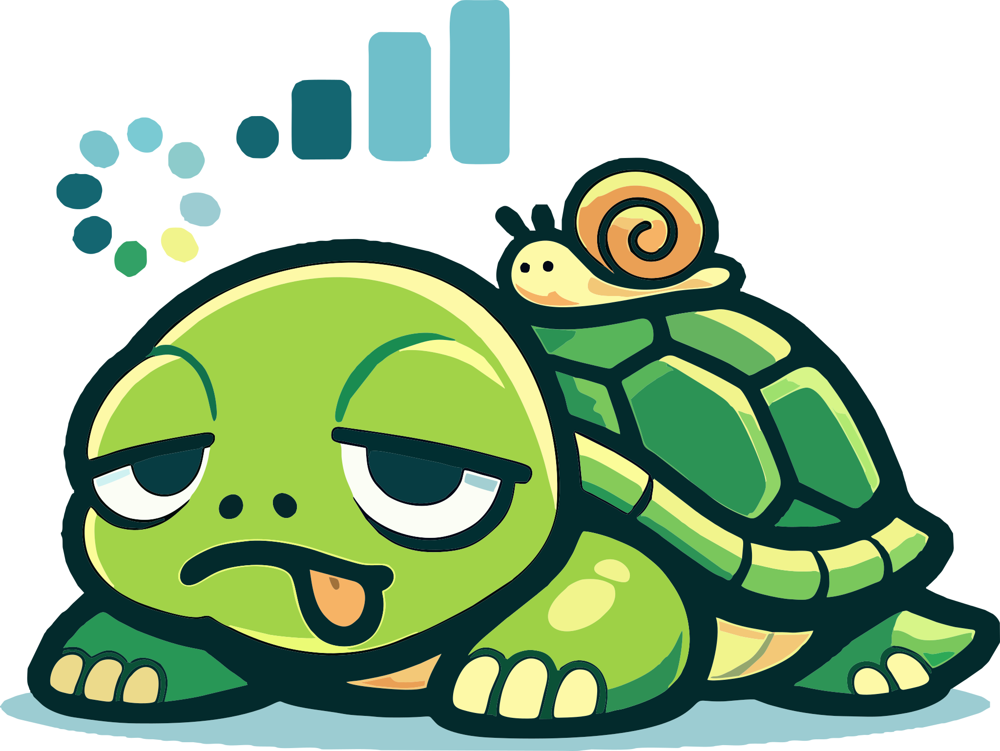

zator

z2r Web UIПанель состояния, проверки доступности и ручной фиксации стратегий zapret2.
Профили
Проверка доступа
—
Импорт списка
TLS Blob
Выбор TLS-блоба для стратегий обхода. Изменение требует перезапуска zapret2.
Безразборный режим (Fallback)
Безразборный режим позволяет обходить блокировки для всех доменов, не только из списков RKN. Включите режим, затем выберите стратегию для TLS (profile 8) и HTTP (profile 9) во вкладке "Стратегии".
Игровой UDP (профиль 7)
Обход игрового UDP-трафика на портах 1026–65531 (BF, FIFA/FC и похожие игры). Включите режим, затем выберите стратегию для профиля 7 во вкладке «Стратегии». Изменение требует перезапуска zapret2.
WireGuard
Стратегия WireGuard отправляет несколько фейковых пакетов инициации до настоящего, чтобы сбить с толку ТСПУ/DPI. Здесь можно включить/выключить стратегию, выбрать fake-пакет и количество его повторов (repeats). Изменение требует перезапуска zapret2.